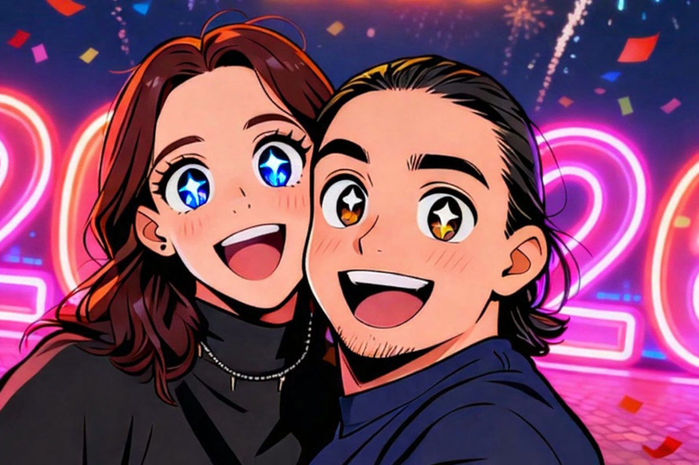

Tu espacio
Todavía no hay una nota tuya en esta hoja, pero el lugar ya está guardado para vos.
Esta hoja queda abierta para cuando quieras escribir.
Hoja nueva 02
Hay momentos donde el amor deja de ser sospecha y se vuelve una certeza que ya no tiene vuelta atrás.

Todavía no hay una nota tuya en esta hoja, pero el lugar ya está guardado para vos.
Esta hoja queda abierta para cuando quieras escribir.
13/02/26
Te vi tocando el bajo, hermosa, con tus pelos rojizos o colorados y supe que ibas a ser un problema, que iba a perder la cabeza por vos. Fuiste la única a la que no seguí en Instagram por miedo a que pienses la verdad: que me gustabas muchísimo.
El tiempo avanzó, empecé a tomar clases de canto con vos, empecé a verte seguido, y cada tiempo que pasaba más me enamorabas. Y esa noche en ese McDonalds caí completamente rendido en tu simplicidad, feliz como una niña con sus muñequitos coreanos. Vi esa sonrisa y me enamoré perdidamente; ahí supe que no había marcha atrás.
Para volver a casa te di las llaves del auto y manejaste vos. Llegamos a tu casa, pasé yo a manejar el trayecto que quedó hasta mi casa, y me preguntabas si estaba bien y si seguro podía manejar, sin saber que en todo el viaje de vuelta no podía manejar porque ahí supe, en ese momento supe, que ya no iba a poder volver atrás. No iba a poder bloquear todo lo que siento; me quemaba en el pecho las ganas de decirte lo mucho que te quiero, y no encontraba manera de decírtelo sin asustarte.
Me fui manejando para mi casa, y a los pocos días me fuiste a buscar a un after office en la oficina. Esa noche, medio borracho, te dije la mayor verdad de mi vida entera: que me encantabas. Y no te voy a mentir, me rompió el corazón completamente que me digas que no sabías si yo te gustaba, pero sí que te interesaba mucho y que nos dejemos fluir.
Yo traté de fingir que nada de eso pasó, incluso acostados en la misma cama fingí que nada de eso pasó, hasta que a la semana me pediste ir a tomar mates a la plaza de tu barrio. Esa noche todavía no la olvido. Nos quedamos hablando horas, hasta que todo se fue al carajo: estábamos cada vez más cerca, nuestras bocas estaban de a poco cada vez más cerca, y yo cada vez que te decía "Andrea" me mirabas como molesta, pero con una sonrisa en el rostro, y cada vez más cerca de mi cara.
Hasta que de golpe me teletransporté a otro mundo y el tiempo se frenó en un suspiro. Recibí el beso más hermoso de mi vida esa noche, y después besos que duraron horas. Se hicieron las 6 AM, yo teniendo que trabajar porque era la madrugada de un jueves, y esa noche ya nada importaba. Me transporté a un campo donde estábamos solo vos y yo, y nada ni nadie más importaba.